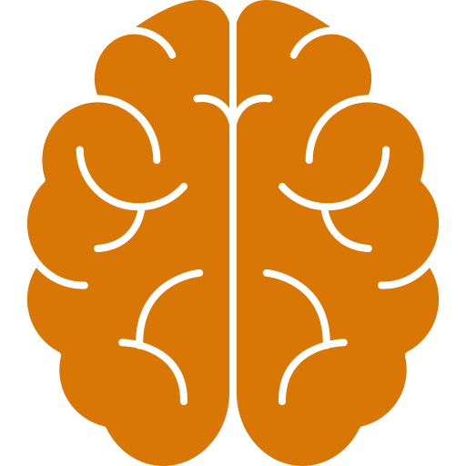
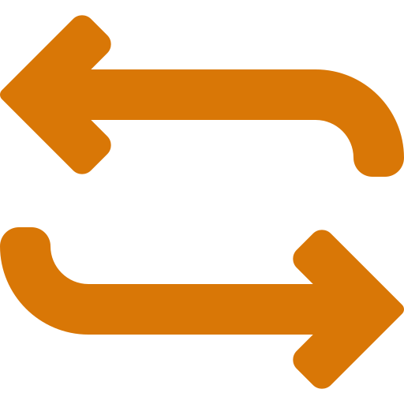

We’re here to help you:
Practice smarter with easy access to Physics, Chemistry, and Combined Maths papers.


Get exam-ready with a clean, no-frills experience — no ads, no distractions.

Your go-to platform for mastering the A/L Physical Science stream


Past papers and materials on this site are provided for educational purposes only. ALNerd.lk is not affiliated with the Department of Examinations Sri Lanka.
Unauthorized distribution or commercial use of content is prohibited.